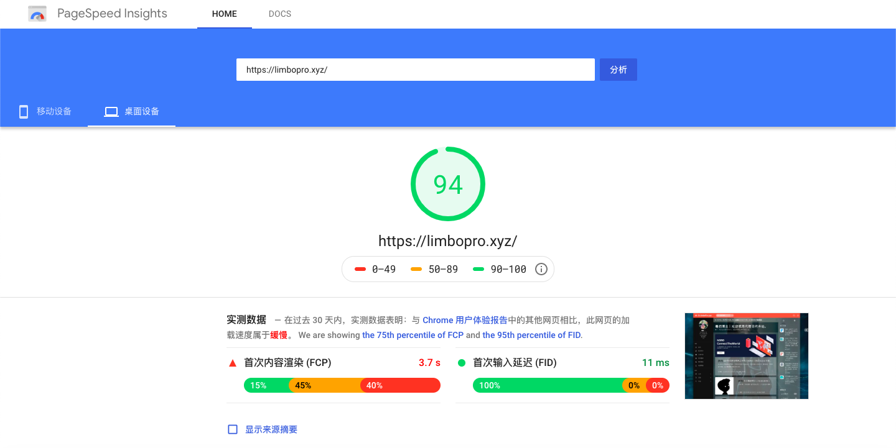

<?xml version="1.0" encoding="UTF-8"?>
<rss version="2.0"
xmlns:content="http://purl.org/rss/1.0/modules/content/"
xmlns:dc="http://purl.org/dc/elements/1.1/"
xmlns:slash="http://purl.org/rss/1.0/modules/slash/"
xmlns:atom="http://www.w3.org/2005/Atom"
xmlns:wfw="http://wellformedweb.org/CommentAPI/">
<channel>
<title>毒奶博主丨欢迎使用代理访问本站。 - 网站优化</title>
<link>https://limbopro.xyz/tag/网站优化/</link>
<atom:link href="https://limbopro.xyz/feed/tag/%E7%BD%91%E7%AB%99%E4%BC%98%E5%8C%96/" rel="self" type="application/rss+xml" />
<language>zh-CN</language>
<description></description>
<lastBuildDate>Sun, 29 Dec 2019 21:51:00 +0800</lastBuildDate>
<pubDate>Sun, 29 Dec 2019 21:51:00 +0800</pubDate>
<item>
<title>TpCache-Typecho 缓存插件（配合Redis食用，800+并发支撑）</title>
<link>https://limbopro.xyz/archives/TpCache.html</link>
<guid>https://limbopro.xyz/archives/TpCache.html</guid>
<pubDate>Sun, 29 Dec 2019 21:51:00 +0800</pubDate>
<dc:creator>毒奶</dc:creator>
<description><![CDATA[本文隶属于 网站优化 分类，点击分类名称查看更多相关主题；主理人说使用了TpCache+Redis组合以后，小伙伴纷纷反馈打开快到飞起。(你打开谷歌首页有多快，就有多快。TpCache项目地址：...]]></description>
<content:encoded xml:lang="zh-CN"><![CDATA[
<p><br>本文隶属于 <a href="../../../category/Typecho/index.html">网站优化</a> 分类，点击分类名称查看更多相关主题；</p><h1>主理人说</h1><p>使用了TpCache+Redis组合以后，小伙伴纷纷反馈打开快到飞起。(你打开谷歌首页有多快，就有多快。</p><h2>TpCache</h2><p>项目地址：<a href="https://github.com/phpgao/TpCache">https://github.com/phpgao/TpCache</a></p><h2>功能</h2><p>减缓网站并发压力而开发的缓存插件。</p><h2>注意</h2><p>1.支持Memcache，Redis，Mysql三种驱动。<br>2.非js方式的访问统计插件会失效。</p><h2>下载并启用TpCache插件</h2><p></p><p>1.进入<a href="https://github.com/phpgao/TpCache">TpCache</a>的Github仓库，<br>2.使用SSH登入服务器使用wget命令进行下载：</p><pre><code>$ wget https://github.com/phpgao/TpCache/archive/master.zip</code></pre><p>3.放入网站根目录/usr/plugins/文件夹下；<br>4.解压压缩包，将文件夹重命名为TpCache；<br>5.进入网站-控制台-插件-找到TpCache启用；</p><p>*如未安装<code>Memcache</code>，<code>Redis</code>PHP扩展，可以使用MySQL驱动；</p><p>6.设置好后，可以强制刷新下首页试试看效果；</p><p>以上，如不想折腾redis则可到此结束，Enjoy。</p><h2>安装redis</h2><p><strong>配合Redis食用，TpCache的性能应该是最佳的</strong>；<br>博主的生产环境是Ubuntu server，按理说下面命令亦适合Redhat、SuSE、Debian、Centos等；</p><p><strong>源码编译安装Redis</strong></p><p>1.进入 Redis 官网：<a href="https://redis.io/">https://redis.io/</a><br>2.找到最新 latest Stable version；<br>3.目前是 5.0.7 <a href="http://download.redis.io/releases/redis-5.0.7.tar.gz">http://download.redis.io/releases/redis-5.0.7.tar.gz</a> ；</p><pre><code>$ cd /usr/src/ 
$ wget http://download.redis.io/releases/redis-5.0.7.tar.gz ##下载Redis最新稳定版
$ tar -zxvf redis-5.0.7.tar.gz ##解压
$ cd redis-5.0.7 
$ make &amp;&amp; make install ##编译与安装</code></pre><p>安装服务</p><pre><code>$ cd /usr/src/redis-5.0.7/utils/
$ ./install_server.sh</code></pre><p>默认配置</p><pre><code>Port           : 6379
Config file    : /etc/redis/6379.conf #配置文件
Log file       : /var/log/redis_6379.log #日志
Data dir       : /var/lib/redis/6379 #生产目录
Executable     : /usr/local/bin/redis-server #redis-serve 文件
Cli Executable : /usr/local/bin/redis-cli #redis-cli文件</code></pre><p>至此，Redis安装完毕，得到两个二进制文件；</p><p><strong>1.redis-server</strong><br><strong>2.redis-cli</strong></p><p>安装成功之后<strong>可以通过以下命令查看redis的安装位置</strong>：（如果你忘记的话）</p><pre><code>$ which redis-server
$ which redis-cli</code></pre><p><strong>编辑redis conf</strong></p><pre><code>$ vi /etc/redis/6379.conf #redis的配置文件</code></pre><pre><code># By default Redis does not run as a daemon. Use 'yes' if you need it.
# Note that Redis will write a pid file in /var/run/redis.pid when daemonized.
daemonize no</code></pre><p>建议将<code>no</code>改为<code>yes</code>，表示改为后台启动（run as a daemon）；如需修改端口找到：</p><pre><code># Accept connections on the specified port, default is 6379 (IANA #815344).
# If port 0 is specified Redis will not listen on a TCP socket.
port 6379 #修改端口即可</code></pre><p><strong>查看redis版本</strong></p><pre><code>$ redis-cli info | grep &quot;redis_version&quot;</code></pre><p><strong>启动redis</strong></p><pre><code>/usr/local/bin/redis-server /etc/redis/6379.conf</code></pre><p><strong>获取使用帮助</strong></p><pre><code>/usr/local/bin/redis-server -h #查看帮助</code></pre><p><strong>常用指令</strong></p><pre><code>Usage: 
./redis-server [/path/to/redis.conf] [options]
./redis-server - (read config from stdin)
./redis-server -v or --version
./redis-server -h or --help
./redis-server --test-memory &lt;megabytes&gt;

Examples:
./redis-server (run the server with default conf)
./redis-server /etc/redis/6379.conf
./redis-server --port 7777
./redis-server --port 7777 --replicaof 127.0.0.1 8888
./redis-server /etc/myredis.conf --loglevel verbose

Sentinel mode:
./redis-server /etc/sentinel.conf --sentine</code></pre><p><strong>查看redis服务是否启动</strong></p><pre><code>$ redis-cli
127.0.0.1:6379&gt; ping #输入ping
pong #反馈结果为pong则连接成功，服务正常；</code></pre><p><strong>测试redis性能</strong></p><pre><code>$ redis-benchmark -q -n 100000 #10w请求，带参数测试
PING_INLINE: 51255.77 requests per second
PING_BULK: 35803.80 requests per second
...
$ redis-benchmark #不带参数测试
====== GET ======
100000 requests completed in 2.19 seconds
50 parallel clients
3 bytes payload
keep alive: 1
...</code></pre><p>以上。</p><h2>安装 PHP redis扩展</h2><p>1.<a href="http://pecl.php.net/package/redis">http://pecl.php.net/package/redis</a>，安装所需版本（例如：redis-5.1.1.tgz ）</p><pre><code>$ cd /usr/src
$ wget http://pecl.php.net/get/redis-5.1.1.tgz
$ tar -zxvf redis-5.1.1.tgz
$ cd redis-5.1.1
$ /usr/local/php/bin/phpize #生成configure配置文件
$ ./configure --with-php-config=/usr/local/php/bin/php-config
$ make &amp;&amp; make install
$ find / -name &quot;php.ini&quot;
/usr/local/php/etc/php.ini
$ vi /usr/local/php/etc/php.ini
extension=redis.so #添加此配置
lnmp restart #重启服务 nginx</code></pre><h2>为TpCache配置redis驱动</h2><p>1.驱动选择redis驱动<br>2.选择你设置的端口；<br>3.保存；</p><h2>总结</h2><p><strong>两个必要，一个配置：</strong><br>1.源码安装redis，并启用redis 服务（确认端口能连接）；<br>2.安装PHP redis扩展 并启用；<br>3.插件配置，确保端口正确；</p><p>以上。</p><h2>效用</h2><p></p><p>来自 <a href="https://developers.google.com/speed/pagespeed/insights/?hl=zh-cn&url=limbopro.xyz&tab=desktop">Pagespeed</a>的得分，突飞猛进；</p><h2>联系主理人</h2><p>1.关注频道 <a href="https://t.me/limboprossr">https://t.me/limboprossr</a> 不失联；<br>2.<code>毒奶粉</code>们（我管我的Fans）可联系 <a href="../../../usr/uploads/2019/10/3453243330.png">TG机器人</a> 或发送 <a href="../../../usr/uploads/2019/10/3453243330.png">邮件</a> 获取帮助；</p><p>3.或点击<code>本页面右下角</code>的聊天按钮联系；</p>
]]></content:encoded>
<slash:comments>0</slash:comments>
<comments>https://limbopro.xyz/archives/TpCache.html#comments</comments>
<wfw:commentRss>https://limbopro.xyz/feed/archives/TpCache.html</wfw:commentRss>
</item>
</channel>
</rss>